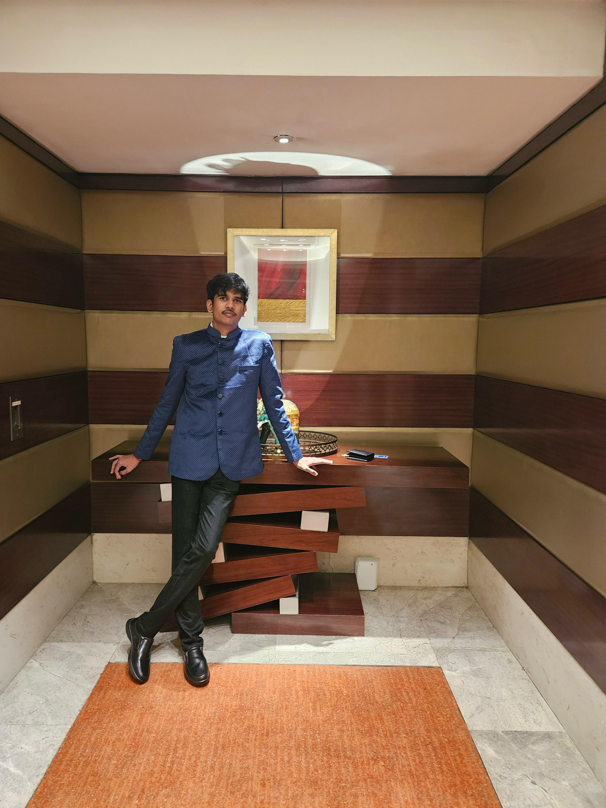

About Me
- Computer Science student at Shiv Nadar University, Chennai.
- I believe the simplest solution is often the best and most elegant.
- Passionate about IoT, embedded systems, and full-stack development.
- I love building systems that combine hardware and software.
- Outside tech, I play the flute—it keeps me creative and focused.
Internship Experience
- Yakkay Technologies (May–June 2025)
- Contributed to an HR automation web platform at an early-stage startup.
- Worked on backend APIs and integrated AI features using pretrained models.
- Built and debugged Python scripts for automation tasks.
- Got exposure to real-world agile development and deployment workflows.
Projects
- GLOF Risk Predictor
- Technologies: MATLAB, Google Earth Engine, IoT Sensors
- Built a real-time flood alert system using satellite + sensor data.
- Used MATLAB for signal analysis and alert generation.
- License Plate Detection System
- Technologies: Python, OpenCV, PyTesseract
- Developed a live vehicle number plate scanner with OCR.
- Improved detection accuracy using image preprocessing techniques.
Events & Participation
- SNUCEE MUN 2023 – Delegate in policy debate and diplomacy.
- VLS MUN 2023 – Discussions on global issues and communication skills.
- VIT MUN 2024 – Represented a country in international negotiations.
Contact
Email: narenkarthik23110463@snuchennai.edu.in
LinkedIn: linkedin.com/in/narenkarthik-kesavamoorthy
